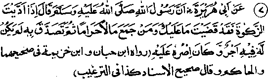
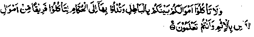

Chapter Four · Section (b): Ahadith on the virtues of Zakaat
3. One should give more than what is due as Sadaqah

Hadith 7
Rasulullah Sallallaho alaihe wasallam has said, "When you have paid Zakaat on your property, you have paid what was due from you (if you spend more, it will count as Nail Sadaqah). But he who gives Sadaqah out of the property earned by unlawful means (usury, bribery, etc.), will get no reward for that and he will also suffer from the evil of his unlawful earnings."
Note: This Hadith contains two subjects: Firstly, only Zakaat is due on one’s property as incumbent (Wajib) levy. Apart from Zakaat, there are degrees of virtues in Nafl Sadaqah and voluntary spending for the sake of Allah Ta'ala. A Hadith says: "He who has paid Zakaat has paid what was due from him on his property; and he who gives more than what is due, is more virtuous". (Kanz)
The Hadith narrated by Dhimam Ibne Tha'labah Radhiallaho anho is quite famous, and has been mentioned in different channels in Bukhari, Muslim and many other authentic collections of Aha-dith. It relates that Dhimam Radhiallaho anho asked Rasulullah Sallallaho alaihe wasallam about the fundamental obligatory requirements of Islam, which the latter explained to him in detail. Among these, Rasulullah Sallallaho alaihe wasallam mentioned Zakaat, whereupon Dhimam asked, ‘Is there anything else due from me, apart from Zakaat? Rasulullah Sallallaho alaihe wasallam replied, ‘No, but you can spend more as Nafl Sadaqah if you like’.
A man sold a house during the time of Khalifah Umar Radhiallaho anho who advised him to dig a hole in his residence and bury the sale money to keep it safe. The man asked, "Will it not be treated as Kanz Treasure (Hoarded money) for which the possessor shall be punished on the Day of Judgment)? Umar Radhiallaho anho said, "A property on which Zakaat has been paid shall not be treated as ‘Kanz’". Ibne Umar Radhiallaho anho has said, "I wouldn’t mind keeping in my possession an amount of gold weighing as much as Mount Uhad, if I kept on paying Zakaat due on it and observing other commands of Allah Ta'ala with regard to it." (Durre Manthur). There are many more Ahadith to that effect in the compilations of Ahadith. Therefore, the four great Imams of ‘Fiqh’ (Islamic jurisprudence) and the generality of Ulama are agreed that, apart from Zakaat, nothing is due on property as such. However, there are other obligations of a Muslim which involve spending of money; for example, the maintenance of wife or the maintenance of one’s minor children. There are other similar cases in which spending of money becomes incumbent upon a Muslim. Another such case is helping a man who is facing death, if food or water is not given to him immediately. It is the collective responsibility (Faradh-e-Kifayah) of a community to save him from such a death.
Imaam Ghazali Rahmatullah alaihe has written in his book, Ihyaa-ul-Uloom: Some (Tabi'een) like Imaam Nakh'ee, Sha‘bi, ‘Ataa and Mujahid Rahmatullah alaihim are of the view that there is something more due on property, apart from Zakaat Someone asked Imaam Sha'bi Rahmatullah alaihe, ‘Is there anything due on property, apart from Zakaat?" He replied, "Yes", and recited the following Ayat:
'And gives his wealth, for love of Him........(to the end).
This has been quoted in full at serial No. 2 in Chapter one. These Legists hold that it is incumbent upon the Muslim that the rich among them should supply the needs of the poor when they come to know of their necessity. According to ‘Fiqh’ the soundest opinion is that, when a person is driven to a stage that, if his need is not fulfilled immediately, he may suffer death, it becomes a collective obligation (Faradh-e-Kifayah)of the whole community to supply his need, though the opinions differ as to whether he should be granted a loan or a donation. (Ihyaa).
It is an incumbent (Wajib) act, in itself, to supply the need of a person who has been driven to dire necessity and may be facing death through hunger or thirst. But nothing is due from a wealthy person on his wealth, apart from Zakaat. At this point, I would like to invite the attention of my readers to two points: -
1. ‘Ifraat’ (Extremism). Nowadays, we are accustomed to go to extremes; so immediately, we transgress the limits of propriety. For example, it is unlawful to take another man’s property except with his own sweet will. Some legists do allow taking another man’s property as a last resort when someone’s life is in danger. But even in such cases, within the Hanafi school of thought, there are two views; one permits eating of carrion in preference to another man’s property; the other view accepts the reverse position that, in a helpless state, instead of taking carrion he may take another man’s property with out permission. All the books on ‘Fiqh’ deal with this controversy. Anyhow, when a person reaches that stage of necessity where eating of carrion becomes permissible for him, he may be allowed to take food belonging to another person without his permission. Says Allah Ta'ala:

"And eat not up your property among yourselves in vanity, nor seek by it to gain the hearing of judges that you may knowingly devour a portion of the property of others wrongfully", (al-Baqarah: 188)
Rasulullah Sallallaho alaihe wasallam has said, "You must not act wrongfully and a man’s property must not be taken, except with his own good will."
Another well-known Hadith reports Rasulullah Sallallaho alaihe wasallam as saying, "if a person wrongfully takes a span of land belonging to another, he will be made to wear round his neck (on the Pay of Resurrection) a column of earth, in breadth a span but in length stretching out to the extent of seven earths. (Mishkaat)
The coming of Hawazin’s deputation to Rasulullah Sallallaho alaihe wasallam is a famous incident of History, which is very much in point here. After they had been defeated in the battle, a deputation of the Hawazin tribe came to Rasulullah Sallallaho alaihe wasallam in order to accept Islam and asked him to return to them their property and captives, which had been taken as booty. Rasulullah Sallallaho alaihe wasallam said that both together could not be returned to them and told them to choose one of the two, the captives or the property. The promise to return one of the two was made because it was in the best interest of Islam and the Muslims. When the Hawazin replied that they preferred their captives, Rasulullah Sallallaho alaihe wasallam called the Muslims who were entitled to a share in the booty and said, "I have promised to return their captives to the Hawazin; so, those of you who are willing to release their captives, without any compensation from us, should act accordingly. As for those who want a compensation, we shall recompense them for releasing the captives that have fallen to their share. The sahabah Radhiallaho anhum, taking the hint, said with one voice that they would be pleased to follow the example of Rasulullah Sallallaho alaihe wasallam and release all the captives. But Rasulullah Sallallaho alaihe wasallam said, "In a large gathering, it cannot be judged for certain which of you are willing from their hearts (to release the captives). So, let your headmen talk to each one of you in private and tell me about your willingness". (Bukhari)
This is the example set by Rasulullah Sallallaho alaihe wasallam with regard to the care to be taken before using the property belonging to others. This Hadith is corroborated by many Ahadith to the effect that it is unlawful to take a thing belonging to another, by force or compulsion.
The virtuous Ulama are extremely careful in such matters, so much so that they do not approve of the donations which are collected in public. For, they argue, a person may donate for a cause Imply because he is shy of saying ‘no’ in public. Hence, it is very important that we do not go beyond limits of propriety and never take anything belonging to others through some forms of compulsion. And we should not be swept off our feet, under the influence of some movements, etc, that are launched from time to time, to hold opinions or act contrary to the precedents set by the virtuous Ulama of the bygone generations. Undoubtedly, the desire to help the poor is praise-worthy but the forms of propriety set by Islam are not to be violated. Rasulullah Sallallaho alaihe wasallam once said, "The worst of people is he who does harm to his own life in the Akhirah, for the worldly benefit of other people". (Mishkaat)
2. So, Ifraat () (exuberance) should be avoided at all costs; but no less harmful is the habit of acting upon the () (Minimum) which, in this regard, consists in feeling satisfied by restricting ourselves to what is due on property according to the strictest calculations. True, Zakaat alone is leviable upon a property, but one should not be content to pay the minimum alone. So far, we have quoted many Ahadith in this book which make it abundantly clear that it is the property spent in our life time, for the cause of Allah, which alone shall benefit us in the Akhirah as it is like money deposited with Allah Ta'ala. After a man passes away, there are few to remember him, and, in course of time, even the parents, wife and children forget about him. They shed tears of sorrow, real or false, for a few days and thereafter engage themselves in their worldly pursuits. Then, for months together, and even for long years, nobody thinks of the dead relatives.